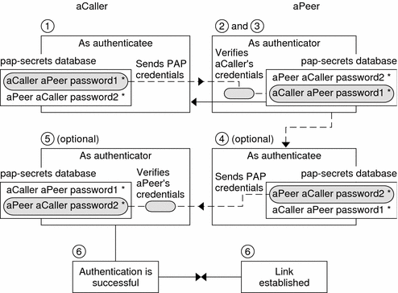
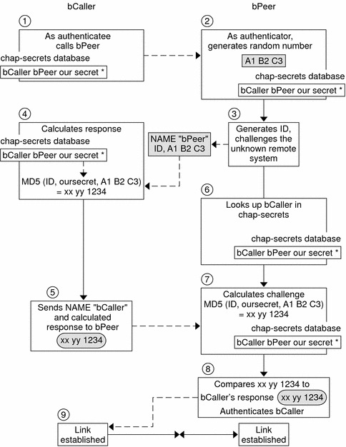

Previous
Previous
What Happens During PAP Authentication
PAP authentication occurs in the following sequence.
Figure 22-1 PAP Authentication ProcessThe caller (authenticatee) calls the remote peer (authenticator) and provides its PAP user name and password as part of link negotiation.
The peer verifies the identity of the caller in its /etc/ppp/pap-secrets file. If the peer uses the login option of PAP, the peer verifies the caller's user name and password in its password database.
If authentication is successful, the peer continues link negotiation with the caller. If authentication fails, the link is dropped.
(Optional) If the caller authenticates responses from remote peers, the remote peer must send its own PAP credentials to the caller. Thus, the remote peer becomes the authenticatee and the caller the authenticator.
(Optional) The original caller reads its own /etc/ppp/pap-secrets to verify the identity of the remote peer.
Note - If the original caller does require authentication credentials from the remote peer, Step 1 and Step 4 happen in parallel.
If the peer is authenticated, negotiation continues. Otherwise, the link is dropped.
Negotiation between caller and peer continues until the link is successfully established.
Using the login Option With /etc/ppp/pap-secrets
You can add the login option for authenticating PAP credentials to any PPP configuration file. When login is specified, for example, in /etc/ppp/options, pppd verifies that the caller's PAP credentials exist in the Solaris password database. The following shows the format of a /etc/ppp/pap-secrets file with the login option.
joe * "" * sally * "" * sue * "" *
The parameters have the following meanings.
- Caller
joe, sally, and sue are the names of the authorized callers.
- Server
Asterisk (*), which indicates that any server name is valid. The name option is not required in the PPP configuration files.
- Password
Double quotes, which indicate that any password is valid.
If a password is in this column, then the password from the peer must match both the PAP password and the UNIX passwd database.
- IP Addresses
Asterisk (*), which indicates that any IP address is allowed.
Challenge-Handshake Authentication Protocol (CHAP)
CHAP authentication uses the notion of the challenge and response, which means that the peer (authenticator) challenges the caller (authenticatee) to prove its identity. The challenge includes a random number and a unique ID that is generated by the authenticator. The caller must use the ID, random number, and its CHAP security credentials to generate the proper response (handshake) to send to the peer.
CHAP security credentials include a CHAP user name and a CHAP “secret.” The CHAP secret is an arbitrary string that is known to both the caller and the peer before they negotiate a PPP link. You configure CHAP security credentials in the CHAP database, /etc/ppp/chap-secrets.
/etc/ppp/chap-secrets File
The CHAP database is implemented in the /etc/ppp/chap-secrets file. Machines on both sides of the PPP link must have each others' CHAP credentials in their /etc/ppp/chap-secrets files for successful authentication.
Note - Unlike PAP, the shared secret must be in the clear on both peers. You cannot use crypt, PAM, or the PPP login option with CHAP.
The /etc/ppp/chap-secrets file has the following syntax.
myclient myserver secret5748 *
The parameters have the following meanings:
- myclient
CHAP user name of the caller. This name can be the same as or different from the caller's UNIX user name.
- myserver
Name of the remote machine, often a dial-in server.
- secret5748
Caller's CHAP secret.
Note - Unlike PAP passwords, CHAP secrets are never sent over the link. Rather, CHAP secrets are used when the local machines compute the response.
- *
IP address that is associated with the caller. Use an asterisk (*) to indicate any IP address.
What Happens During CHAP Authentication
CHAP authentication occurs in the following sequence.
Figure 22-2 CHAP Authentication SequenceTwo peers that are about to initiate communications agree on a secret to be used for authentication during negotiation of a PPP link.
The administrators of both machines add the secret, CHAP user names, and other CHAP credentials to the /etc/ppp/chap-secrets database of their respective machines.
The caller (authenticatee) calls the remote peer (authenticator).
The authenticator generates a random number and an ID, and sends this data to the authenticatee as a challenge.
The authenticatee looks up the peer's name and secret in its /etc/ppp/chap-secrets database.
The authenticatee calculates a response by applying the MD5 computational algorithm to the secret and the peer's random number challenge. Then the authenticatee sends the results as its response to the authenticator.
The authenticator looks up the authenticatee's name and secret in its /etc/ppp/chap-secrets database.
The authenticator calculates its own figure by applying MD5 to the number that was generated as the challenge and the secret for the authenticatee in /etc/ppp/chap-secrets.
The authenticator compares its results with the response from the caller. If the two numbers are the same, the peer has successfully authenticated the caller, and link negotiation continues. Otherwise the link is dropped.